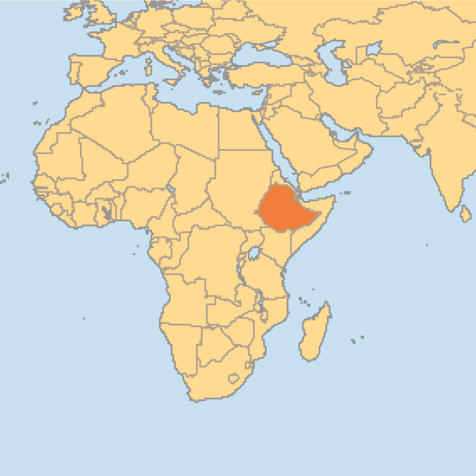
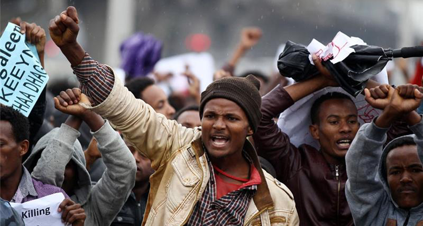

Ethiopian Killing Fields
Oromos, the ethnic majority in Ethiopia, have been orchestrating a series of protest rallies since April of 2014. The immediate cause of the protests was a development plan that sought to expand the capital of Ethiopia into neighboring Oromo settlements. The Ethiopian government cracked down on these peaceful protests much harder than needed, resulting in almost 400 deaths. Since then these peaceful protest groups have been regularly killed by the Ethiopian government.
These killing are occurring in the lands occupied by the Oromo people, Oromia, and the capital of Ethiopia, Addis Ababa. Specifically these killings are happening in peaceful protest rallies, where police violently putting them down. These protest rallies are against the expansion of Addis Ababa’s municipality to take Oromo land and evict farmers on land moved into the Addis Ababa municipality.
The three main groups that are involved in this conflict are the Oromos, the Tigran, and the police and security forces. The Oromos are the majority of the population and are the ones protesting against their rights being taken. The Tigran are the definite minority in Ethiopia, and they are controlling the government that is suppressing the Oromos. The police and security forces are the main killers in this situation. These people, controlled by the Tigran, are the ones violently suppressing the peaceful protests.

Despite the fact that both the UN and African Union have major offices in Addis Ababa, no real action has been taken to deal with these slaughters. At times, the government has promised action, but at other times, the government has “claimed that protesters are connected to banned opposition groups, a common government tactic to discredit popular dissent, and has charged numerous opposition members under the country’s repressive counterterrorism law”. However, the government has given up the plan to redefine the boundaries of Addis Ababa, which was the original impetus of the protests.
Historically the Oromo people have been pushed to the margin of the country’s political and social life, rendered unworthy of respect and consideration. Oromo language and culture has been systematically oppressed, making them nearly invisible in the mainstream media, which is why this hasn’t been covered more frequently. A large part of this problem is the fact that the media has largely ignored this issue and done nothing to spread awareness about the killings in Oromia. Ethiopian government sees no consequences to their actions, as many world powers have not done anything about these killing fields
Help spread the word! We need as much help as possible! Media coverage is essential for the victims of the Ethiopian Killing Fields to get help.